Le navigateur internet est l’outil primordial sur un appareil mobile. Il est le moteur pour naviguer sur internet. Plus uniquement pour les sites web mais aussi maintenant pour les nouveaux types d’applications basées sur les technologies web (progressive web app, jeux…).
Le 14 novembre 2023, Brave a annoncé sur le réseau social X que son navigateur consommerait 40% de moins que Chrome en bloquant notamment les publicités et les traqueurs utilisés pour collecter des données sur les utilisateurs.
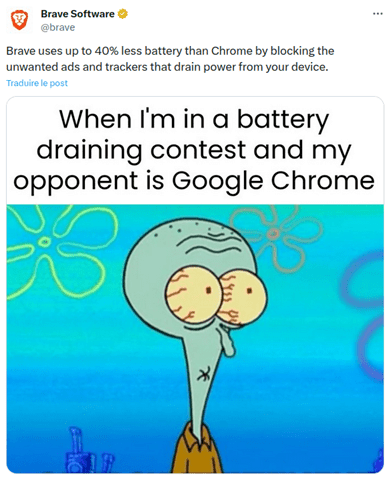
Ainsi, pour cette nouvelle édition de notre classement, dont la dernière date de 2021, nous avons choisi de comparer 8 navigateurs internet : Brave, DuckDuckGo, Chrome, Ecosia, Edge, Firefox, Samsung et Qwant.
| Pour chacune de ces applications mesurées sur un smartphone Galaxy S10 (Android 12), les scénarios intégrant les fonctionnalités du navigateur ont été réalisés au travers de notre Greenspector Test Runner, permettant la réalisation de tests automatisés. Pour rappel, voici le scénario de mesure utilisé pour chacun des navigateurs : – Lancement du navigateur + idle – Ouverture d’un nouvel onglet – Ecriture de l’URL dans la barre de recherche – Chargement du site web + idle Ces 3 dernières étapes sont réitérées pour 4 sites web différents avec des fonctionnalités et modèles différents. |
Consommation d’énergie parcours entier en mAh

La moyenne de consommation d’énergie est de 19 mAh. Pour rappel, la moyenne du classement 2021 était de 49mAh mais les mesures avaient été réalisées sur une Samsung Galaxy S7 ce qui explique en partie cette différence de consommation.
Voici l’évolution par rapport à l’année dernière.
| Classement 2024 | Classement 2021 | Classement 2020 | Evolution depuis la dernière édition | |
| Firefox | 1 | 6 | 7 | +5 |
| Brave | 2 | 2 | 5 | = |
| DuckDuckGo | 3 | 1 | 2 | -2 |
| Qwant | 4 | 8 | 8 | +4 |
| Chrome | 5 | 4 | 3 | -1 |
| Edge | 6 | 7 | 6 | +1 |
| Samsung | 7 | 5 | 4 | -2 |
| Ecosia | 8 | 3 | 1 | -5 |
Firefox est la meilleure solution en termes de consommation énergétique d’après notre comparatif sur le parcours dans sa globalité.
A noter que les navigateurs les plus répandus sont Firefox, Chrome, Samsung et Edge. Les autres dits écoresponsables : Brave, Duck Duck Go, Qwant sont plutôt dans le haut du panier mais Ecosia contrebalance cette tendance en étant dernier du classement.
Cette consommation totale d’énergie peut être évaluée et analysée en 2 domaines : la consommation d’énergie de la navigation pure et la consommation d’énergie liée aux fonctionnalités du navigateur.
Consommation d’énergie de la navigation
La navigation est la consommation uniquement associée à la visualisation de la page (pas de prise en compte du lancement du navigateur, des fonctionnalités…).
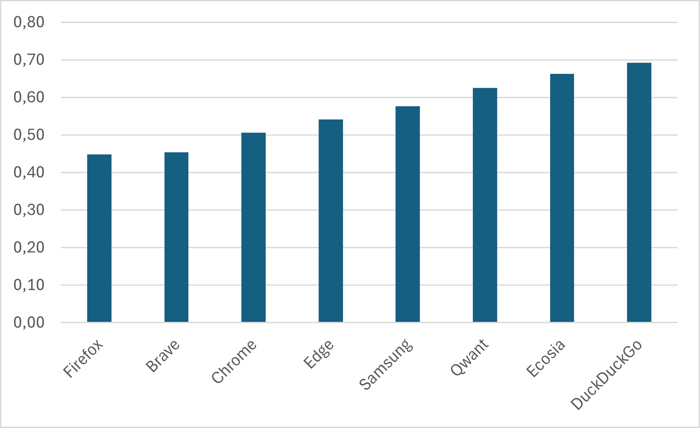
La majorité des navigateurs utilisent le moteur de rendu (composant permettant de présenter une page web) Blink excepté Firefox qui utilise Gecko. On constate que Firefox est le navigateur le moins consommateur qui semble avoir fait des efforts en ce sens car le classement montre une réelle évolution depuis le précédent en 2021 lors duquel il était en avant dernière position. Duck Duck Go à l’inverse dégringole de la première place pour terminer 7e.
Consommation d’énergie des fonctionnalités
Les fonctionnalités intègrent les états du navigateur comme les périodes d’inactivités (idle), le lancement du navigateur, l’écriture des URLs dans la barre de navigation.

On constate que le classement de consommation d’énergie des fonctionnalités change de celui de l’énergie totale. Duck Duck Go est le plus économe en énergie grâce à un lancement du navigateur et une écriture d’URL plus sobres que ses semblables.
A l’inverse, Edge montre des fonctionnalités très consommatrices mais son étape de pause à l’ouverture du navigateur montre une faible consommation. En effet, Edge dispose d’un fond d’écran aléatoire, tout comme Brave comme vu ci-dessous. Bien que l’image alourdisse le lancement du navigateur, elle est généralement plus sombre que le simple écran clair des autres navigateurs. L’appareil de mesure, le Galaxy S10, dispose d’un écran OLED et consomme moins lors de l’affichage de pixels sombres comme c’est le cas ici ce qui explique notamment la sobriété de l’étape de pause.
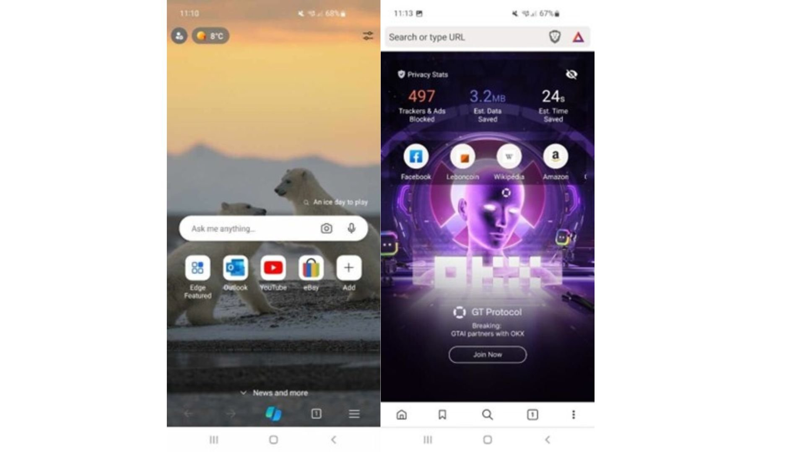
Autonomie

L’autonomie est le nombre d’heures pendant lesquelles l’utilisateur peut surfer avant que la batterie ne soit complètement déchargée. Le classement change peu par rapport à celui de l’énergie, l’autonomie étant directement liée à l’énergie mais aussi à la performance des étapes du parcours.
On observe que l’autonomie peut varier d’environ 2h20 entre le navigateur le plus consommateur (Ecosia) et le moins consommateur (Brave).
Volume de données échangées (Mo)
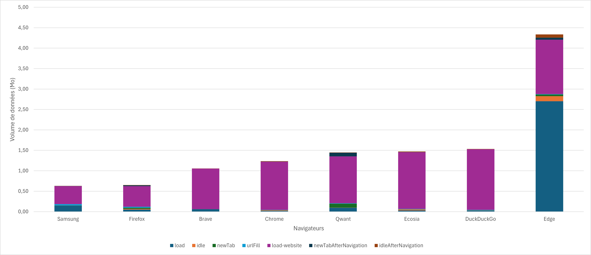
Le plus gros impact en termes de transfert de données se situe au chargement du site web pour l’ensemble des navigateurs ce qui est cohérent car l’affichage d’un site demande un chargement conséquent de fichiers.
Pour Edge, le lancement du navigateur est la 2e étape la plus consommatrice en termes de données car est en moyenne à 2,7 Mo. Cela s’explique notamment par le chargement de fond d’écran qui change tous les jours.
Brave se démarque par le fait de n’effectuer aucun transfert de donnée durant l’ouverture d’un nouvel onglet et l’écriture d’URL.
Firefox et Samsung ne sont pas les plus légers en volume de données transférées durant les étapes hors navigation mais chargent moins de données à l’affichage des différents sites web. Il est possible que ces navigateurs bloquent un certain nombre de scripts (services tiers, publicités, etc).
Mémoire consommée (RAM) par le processus navigateur (Go)
Optimiser la gestion de la mémoire dans les services numériques est essentiel. Même si ses variations ne modifient pas directement l’impact énergétique, leur importance ne peut être négligée. Les conséquences de la surconsommation sur des smartphones déjà chargés en mémoire ou sur des modèles plus anciens peuvent provoquer des instabilités et des conflits d’applications. Du point de vue écologique, cela peut inciter les utilisateurs à changer prématurément de smartphone pour un modèle plus performant, influençant ainsi leur empreinte environnementale.
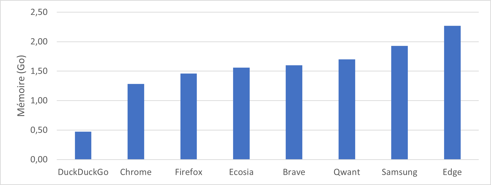
La variation va de 500 Mo à 2,3 Go (soit environ le quart de la RAM du Samsung Galaxy S10 qui est de 8 Go).
Observons plus précisément le comportement de la mémoire suite à la séquence :
- Lancement navigateur
- Inactivité Navigateur
- Navigation (Moyenne de la consommation mémoire)
- Ouverture d’un nouvel onglet
- Ecriture de l’url
- Affichage du site web
- Inactivité
- Inactivité suite à la navigation
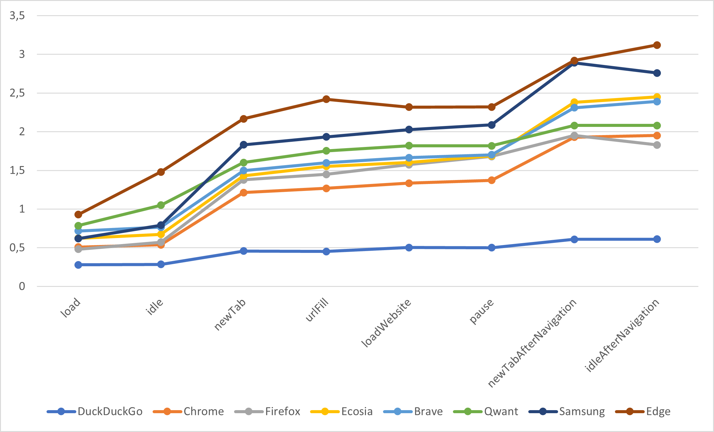
Au lancement des navigateurs, on a une médiane d’utilisation de la mémoire de 620 Mo. Edge, tout comme sur l’édition précédente, consomme davantage avec 929 Mo (+10,2% par rapport à 2021).
Si on laisse le navigateur inactif, la consommation mémoire de la plupart des navigateurs reste assez stable. Ce qui est plutôt bon et normal. En revanche, on voit que Edge et Qwant ont une forte augmentation de la mémoire.
Ensuite, avec l’ouverture d’un nouvel onglet de navigation, la mémoire consommée augmente de façon importante. Pour certains, cela s’explique par la consommation des moteurs de navigation pour transférer et afficher les actualités ou autres sites favoris. La gestion des onglets va aussi jouer. Duck Duck Go est le seul navigateur à afficher une consommation de mémoire stable tout au long du parcours d’utilisation.
Performance
Nous avons mesuré le temps d’écriture de l’URL dans la barre d’adresse.
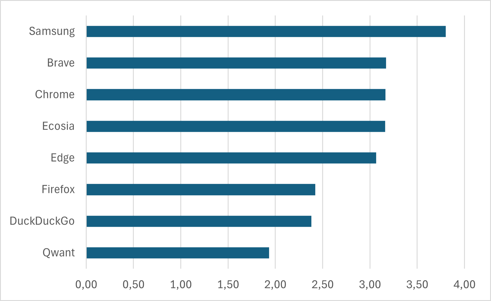
Cette différence de performance s’explique par plusieurs facteurs : échanges réseau lors de la saisie (auto-complétions), traitement lors de la saisie, recherche en base des adresses connues… Au final, pour l’utilisateur le temps pour avoir accès au site va être plus ou moins long.
Impact environnemental
L’impact environnemental est calculé selon différents facteurs d’émission : l’énergie consommée et l’usure de la batterie, l’impact du réseau ainsi que celui du serveur selon la quantité de donnée transférée. L’impact présenté en termes d’émissions de gaz à effet de serre est unitaire au parcours présenté en début d’article rappelé ci-dessous :
- Lancement du navigateur + idle
- Ouverture d’un nouvel onglet
- Ecriture de l’URL dans la barre de recherche
- Chargement du site web + idle
Ces 3 dernières étapes sont réitérées pour 4 sites web différents avec des fonctionnalités et modèles différents.
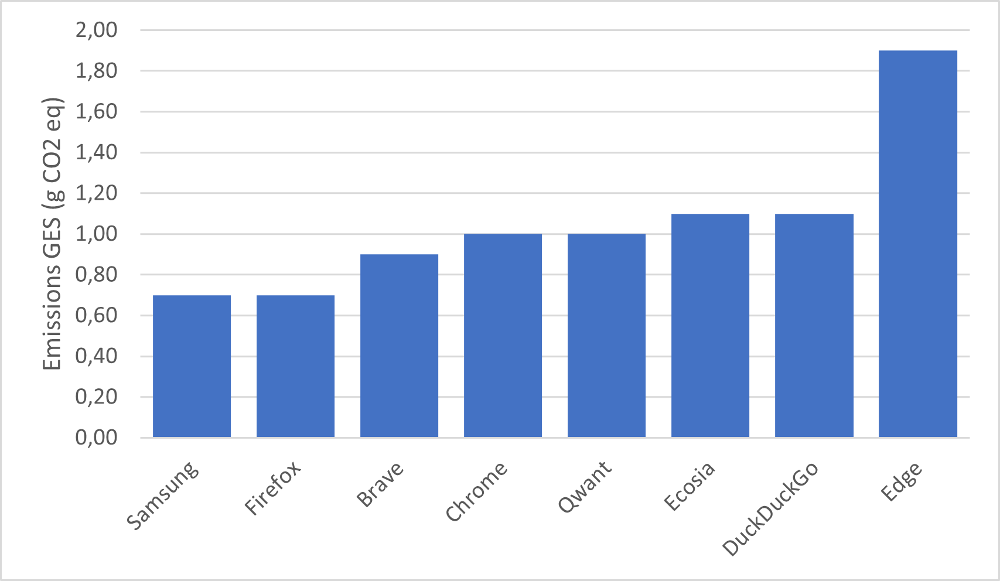
Samsung et Firefox émettent le moins de CO2eq en raison du faible échange de données tout au long du parcours de Samsung et la faible consommation d’énergie de Firefox.
A l’inverse, Edge est le navigateur le plus impactant en raison de ses transferts de données très élevés.
Et sur iOS, ça donne quoi ?
Sur iOS, les principaux navigateurs sont :
- Safari : c’est le navigateur par défaut des appareils iOS développé par Apple
- Chrome : qui est également disponible sur iOS
Il est important de noter que bien que d’autres navigateurs soient disponibles, ils utilisent souvent le moteur de rendu WebKit, le même moteur que Safari, en raison des restrictions imposées par Apple sur les moteurs de rendu tiers.
Pour chacune de ces applications mesurées sur un smartphone iPhone 14, le scénario est le même que celui réalisé sur Android.
La consommation d’énergie peut être évaluée et analysée en 2 domaines : la consommation d’énergie de la navigation pure et la consommation d’énergie liée aux fonctionnalités du navigateur.
Consommation d’énergie des fonctionnalités et de la navigation
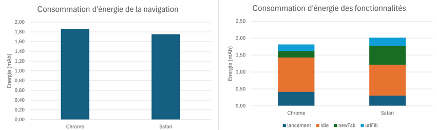
Safari consomme en moyenne davantage d’énergie à l’ouverture d’un nouvel onglet en comparaison avec Chrome. Cependant, le navigateur de Google montre une consommation moyenne lors de la navigation légèrement plus élevée que Safari.
Volume de données échangé (Ko)
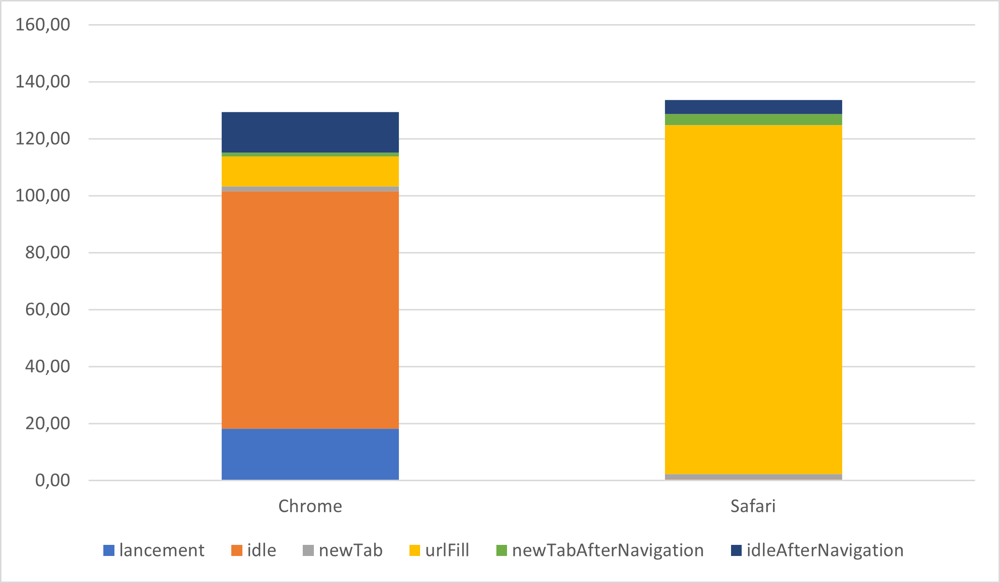
On note ici un fort volume de données échangé, pour les 2 navigateurs mais pas aux mêmes étapes. En effet, Chrome est davantage impactant au lancement et à la pause qui le suit tandis que Safari transfère la quasi-totalité de son volume pendant l’écriture de l’url dans la barre d’adresse.
L’étape de lancement est conditionnée pour mesurer l’envoi de données depuis le lancement de l’application jusqu’alors fermée jusqu’à l’affichage du dernier élément qui s’affiche pour l’utilisateur. Ici, le grand nombre de données de données est transféré pendant la pause est potentiellement dû à des processus s’initialisant an lancement du navigateur.
Pour Safari, c’est l’étape d’écriture d’url qui provoque beaucoup d’échange de données. Lorsqu’une URL est saisie, certains navigateurs anticipent le chargement des ressources liées à la page demandée. Cela passe notamment par la suggestion de résultats de recherche et l’auto-complétion, la récupération des adresses IP avant même que l’utilisateur n’ait validé l’url voire le pré chargement de contenu du site pour améliorer les performances du navigateur.
Ces données transférées viennent aussi des scripts d’analytics qui envoient des informations sur le trafic, le comportement utilisateur à des fins de suivi et marketing.
Impact environnemental
L’impact environnemental de Safari est plus élevé de 50g eqCO2 que celui de Chrome. Cela s’explique par la quantité de données élevée que Safari transfère pendant l’écriture de l’URL dans sa barre de recherche.
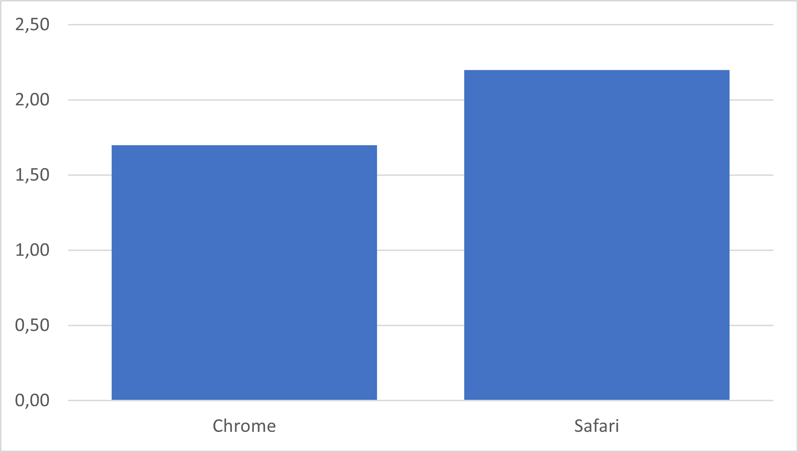
Pistes et initiatives prometteuses
Si certains navigateurs se démarquent déjà par leur sobriété énergétique ou leur gestion optimisée des données, la navigation web reste une activité aux impacts environnementaux significatifs. Heureusement, des initiatives émergent pour transformer cette expérience en profondeur, que ce soit par des outils visant à réduire l’empreinte carbone des internautes, des concepts de design low-tech, ou encore des fonctionnalités intégrées par les grands éditeurs.
Parmi celles-ci, des extensions telles que Low Web Extension offrent des solutions concrètes. Cet outil agit en limitant la consommation inutile de ressources par des sites web, notamment en bloquant les scripts non essentiels, les images lourdes ou les polices trop gourmandes.
Des réflexions sur le design des navigateurs, comme celles évoquées dans un article sur les navigateurs low-tech, proposent de repenser les interfaces pour qu’elles soient plus simples et sobres. Ces concepts incluent notamment la réduction des fonctionnalités superflues, ainsi que l’ajout d’outils pédagogiques tels que des jauges pour suivre la consommation de ressources ou des options limitant la durée d’utilisation.
De plus, de grands éditeurs de navigateurs explorent également des solutions. Microsoft a amorcé des discussions pour intégrer dans ses outils des indicateurs de sobriété numérique à destination des développeurs, permettant de mesurer l’impact des sites web en temps réel dans les DevTools. De son côté, Mozilla réfléchit à un Eco Mode pour Firefox, qui pourrait inclure un mode « basse consommation », des alertes sur l’empreinte carbone ou des recommandations d’éco-gestes en ligne.
Conclusion
Sur Android, c’est Firefox qui est le plus sobre en consommation d’énergie au global et le navigateur transférant le moins de données. Duck Duck Go est davantage sobre sur les fonctionnalités et consomme moins de RAM que ses concurrents.
Sur iOS, c’est Chrome qui apparait moins consommateur que Safari sur tout le parcours. Safari transfère davantage de données durant l’étape d’écriture d’URL tandis que Chrome génère beaucoup de transfert de données à son lancement.